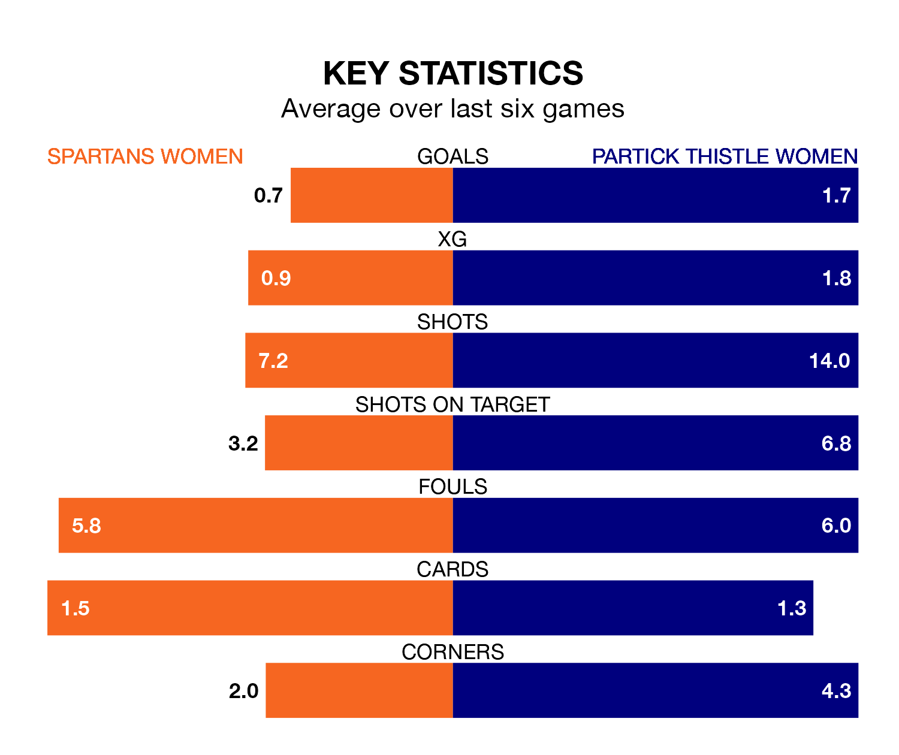

Spartans Women are on a terrible run ahead of hosting Partick Thistle Women at the Ainslie Park Stadium on Wednesday, with just one point collected from their last six games.
The Spartans have picked up just one draw in their last six SWPL 1 games, and face a Thistle side whose last six games have brought four wins and two losses.
Spartans are 11th in the table after 18 games, of which they have won two and drawn three, earning nine points.
Partick Thistle are five places ahead of the Spartans in sixth, with 11 wins and seven losses putting them on 33 points.
In the last 10 years, Spartans and Partick Thistle have played each other on seven occasions. Spartans won one of them, Partick Thistle two, and they drew four times.
On average, the Spartans scored 0.4 goals and Thistle 1.0 in those matches.
Their last meeting was on October 1, when Partick Thistle won 2-0 at home.
With 18 goals in 18 games so far this season, the hosts are scoring at below the league average rate with 1.0 goals per game. And they are conceding more than average, letting in 51 goals at a rate of 2.8 per game.
Thistle are also below average scorers, with 1.8 goals per game, compared to a league average of 2.2. They have conceded 1.6 goals per game.
With Megan Cunningham between the sticks, the away side can rely on one of the league's safest pair of hands. She has kept five clean sheets in her 12 appearances this season in SWPL 1.
In Spartans's net, Alicia Yates has two clean sheets in 12 games. She has conceded a goal every 36 minutes, 50% more often than the 53 minutes between goals for Cunningham.
Spartans's last match was on January 28, a 1-0 loss against Hearts Women.
Partick Thistle beat Montrose Women 2-1 last time out, also on January 28, with Cara Henderson on the scoresheet.
Updated: 10:01 (UTC), 06/02/24